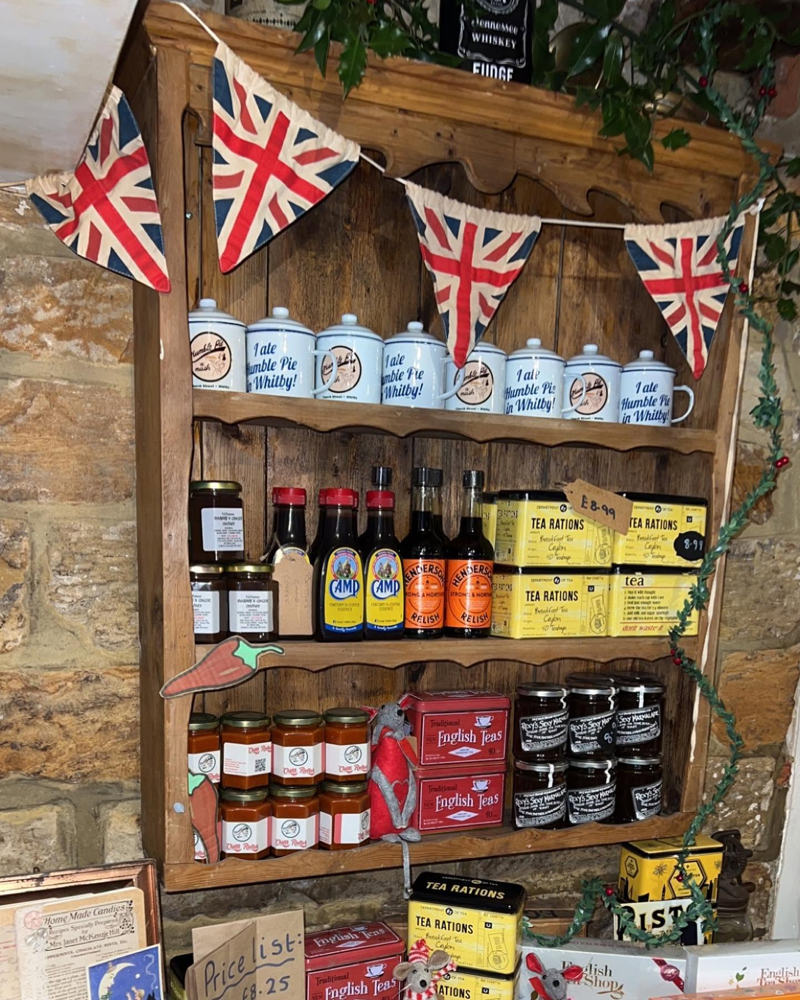
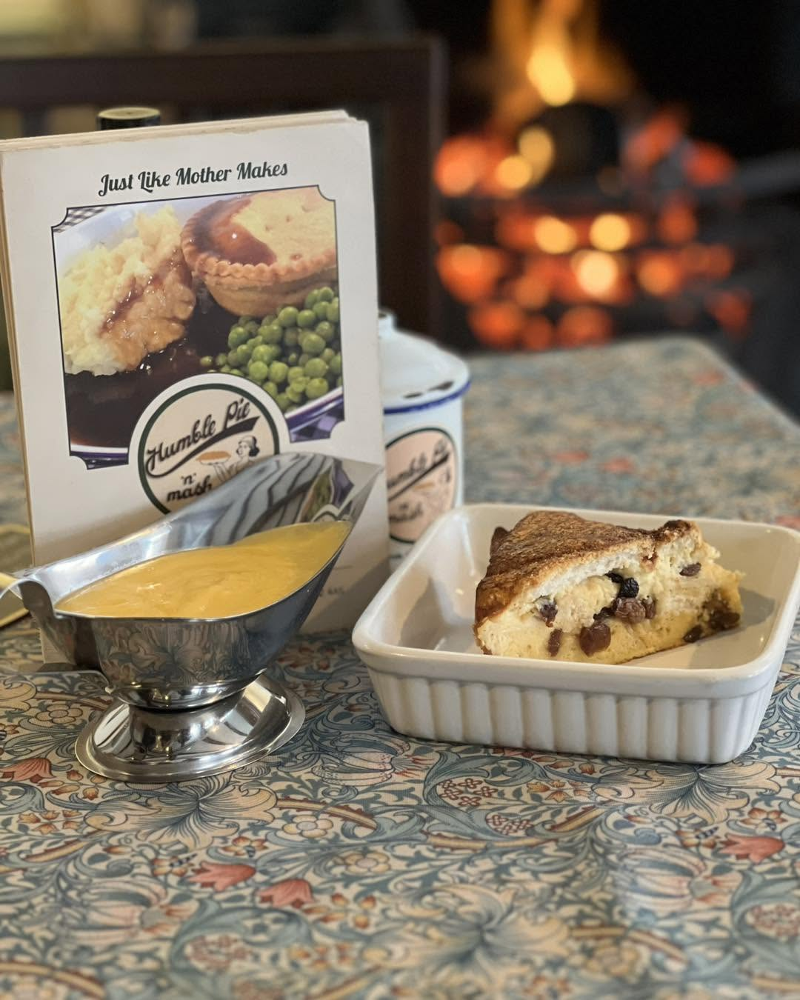
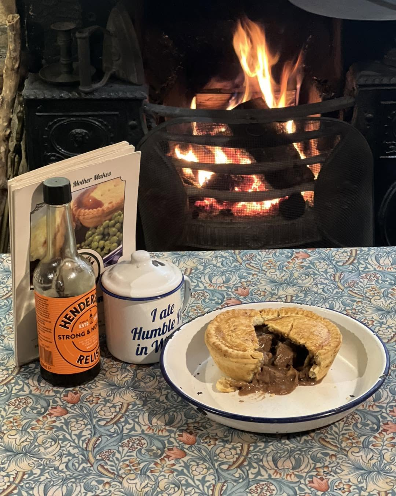
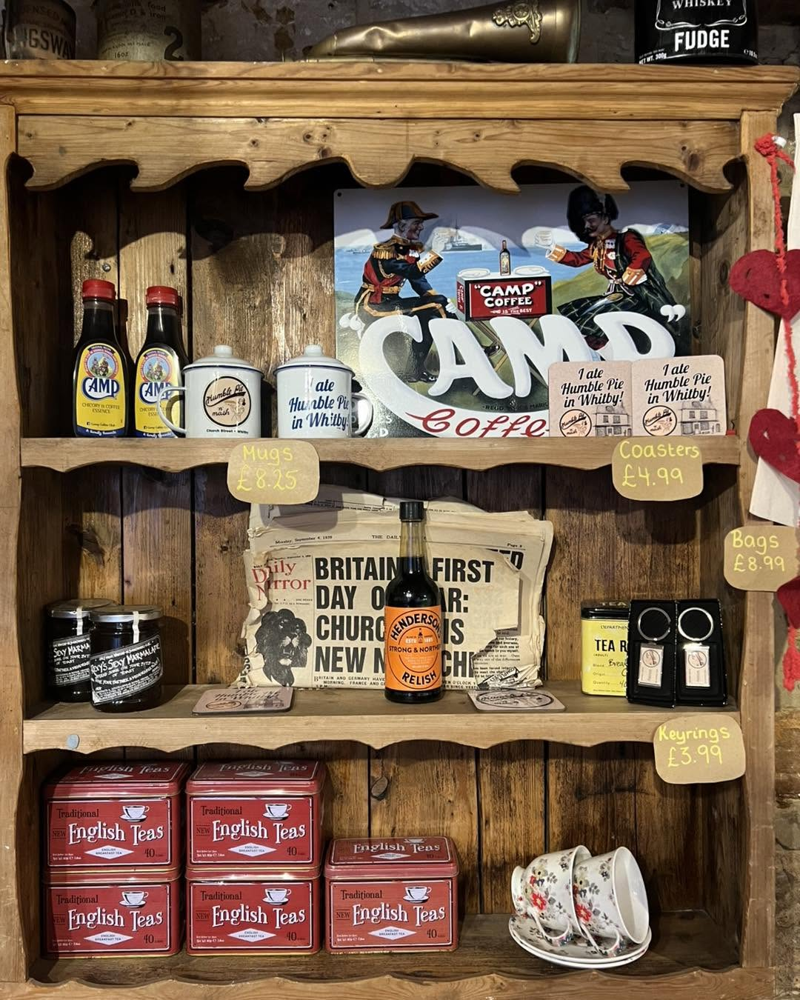
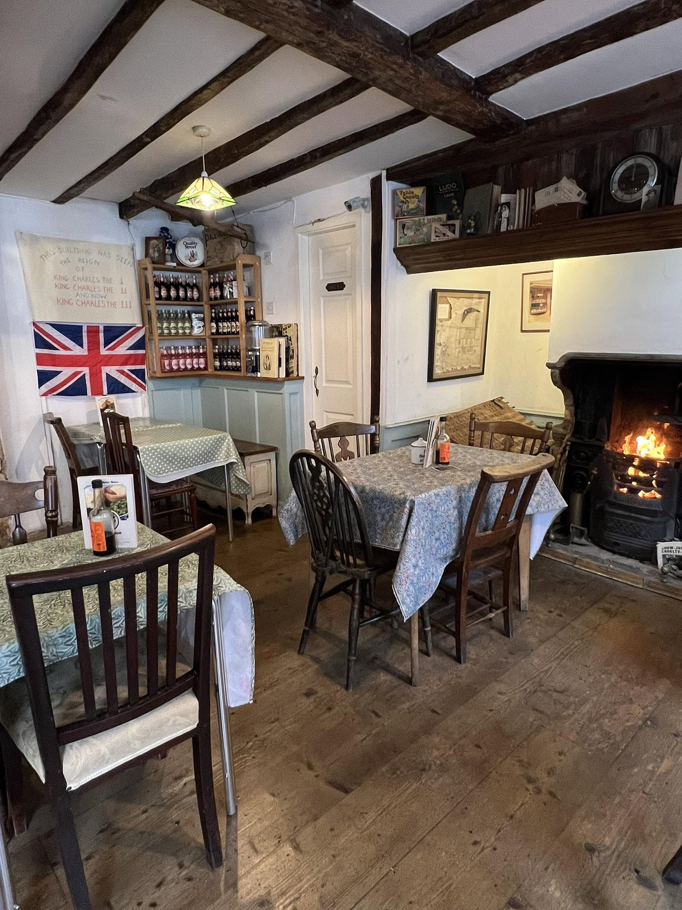
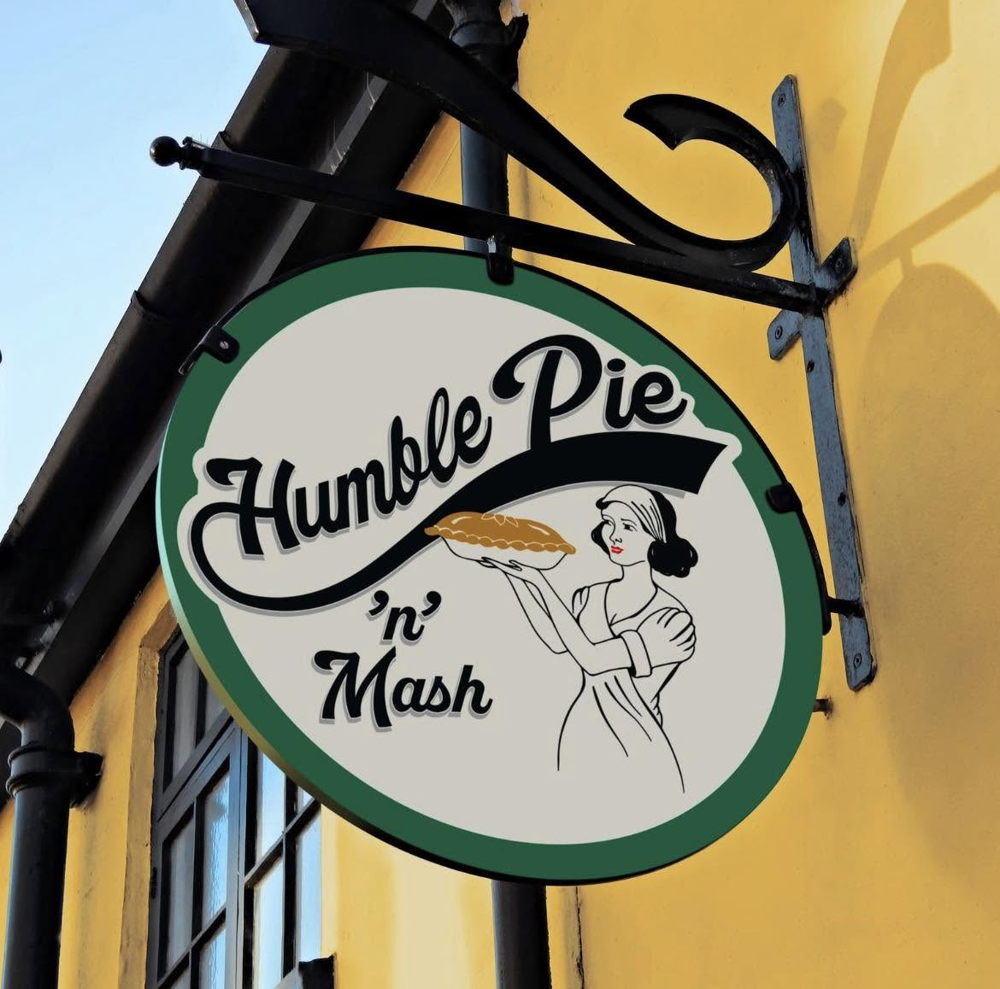

Proper pies,
open fire, Whitby.
Homemade pies in a 16th-century building on Church Street. Bring a pint from the pub opposite.

A 16th-century bakery, brought back to life.
This timber-framed building on Church Street was a Victorian bakery long before it was our little pie shop. The original oven is long gone, but the open fire still burns every day we are open. Low beams, stone flags, and the smell of pastry in the air.
We opened in July 2022 with a simple idea: three pies, done properly, served with mash and gravy. No website, no social media. Just word of mouth.

Three pies, done right.
Steak and stout, chicken and cider, vegan mushroom. Each one made from scratch every morning. Served with buttery mash and proper gravy.

Steak & Stout
Rich local beef, dark stout, slow-cooked until tender

Chicken & Cider
Free-range chicken, dry cider, fresh tarragon
Vegan Mushroom
Wild mushrooms, fresh thyme, plant-based, surprisingly hearty. Holds its own against the meat pies.
The little things that matter.
Real open fire
Lit every day we are open. Nothing beats a pie by the fire on a wet Whitby afternoon.
BYO pint
We do not sell alcohol, but the pub across Church Street does. Grab a pint and bring it over.
Dog-friendly
Well-behaved dogs welcome. Expect a water bowl by the fire and the occasional scrap of pastry.
Opening times
Thursday to Sunday, 12:00 till 20:00. Closed Monday to Wednesday. Kitchen closes at 19:30.

Best pie I have had in years. The open fire, the old building, a pint from across the road. We told everyone about it the moment we got home.TripAdvisor review, October 2025

Find us on Church Street.
163 Church Street, Whitby, YO22 4AS. A short walk from the harbour, tucked among the old fishing cottages on the east side.
Look for the timber-framed building with the black door. If you smell pastry and woodsmoke, you are in the right place.